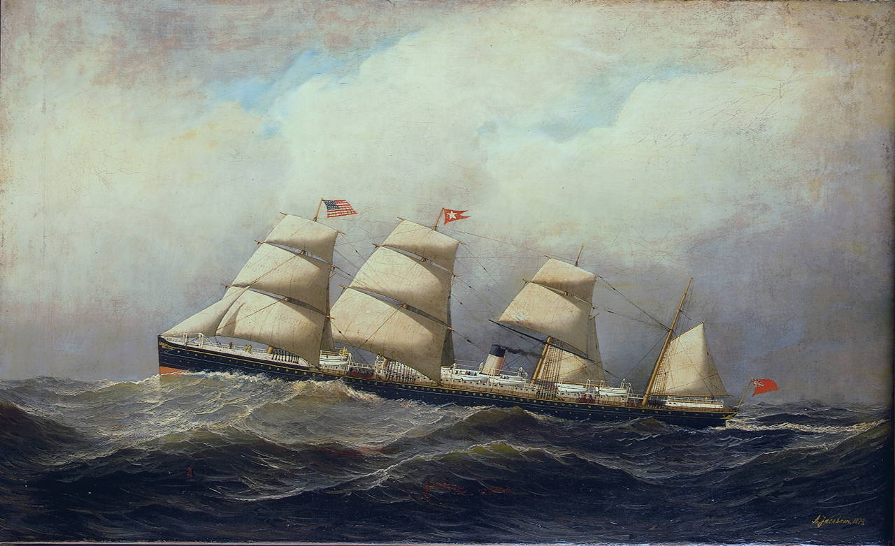

Mary Reddenbough
date unknown – after 1861
Quick Facts
Immediate Family
Parents
Unknown UNPROVEDNo parent couple is named in any record held. The Palatine surname points to the Rodenbucher/Ursburlbaugh families of County Limerick — a surname history, not a named couple. A background search for the parents (FamilySearch + Irish records, 6 November 2026) found no parent name.
Spouse
Thomas Murnahan (born about 1831, Ireland), married in Ireland (no record) SUPPORTEDNamed together as the parents of Mary T. Murnahan on her Ohio death certificate. No marriage record found in Ireland or Ohio.
Children
Mary T. Murnahan (born 1 December 1861, Ireland; died 19 January 1923, Cincinnati; married (1) William Green, (2) John W. Williams 29 July 1886) SUPPORTEDMary T. is the one proved child. Her parentage rests on her Ohio death certificate (informant unidentified). With William Green she had Julia (1873), Ellen (1875), Mary Ida (1878–1967; her death 6 June 1967, Cincinnati, verified — FamilySearch GWG9-4Z5), and William (1879–1880); the Green marriage, about 1873, is a tree lead, never verified. Her marriage to John W. Williams, 29 July 1886, as “Mary Collins” — the parish register entry was viewed per the research folder; no civil index entry has been located.
On Family Tree Sites
Life Timeline
Ireland
Born, date unknown UNPROVED (Irish Palatine — Rodenbucher/Ursburlbaugh, County Limerick — SUPPORTED 75%+; parish unproved; no birth record)
1 December 1861
Daughter Mary born in Ireland DOCUMENTED (Ohio death certificate)
1862–1873
Crossed to America with daughter Mary SUPPORTED (window; the 1900 census gives immigration 1856 — in conflict with the death certificate’s 1 December 1861 birth in Ireland; neither year is adopted)
after 1873
No further record UNPROVED
Life Story
Mary Reddenbough is known from exactly one record: her daughter Mary T. Murnahan’s Ohio death certificate, which names her mother Mary Reddenbough, born in Ireland. No birth, marriage, death, or burial record has been found for Mary herself, and no parent couple is named anywhere. Her name is not an Irish name at all: Reddenbough is an altered form of the German Redenbach or Rettenbach, and the name points to the Irish Palatines — the German families settled in County Limerick in 1709, among them Rodenbucher and Ursburlbaugh, at Rathkeale, Adare, Ballingrane, Court Matrix, and Castle Oliver. That Palatine origin is supported at 75% or better by the surname history, but it is a surname history, not a record: no parish, no baptism, and no parents have been found. The Knocklong hypothesis — that the family came from Knocklong and Grange, where a Thos Murnane held land in the 1834 Tithe Applotment — is unproved, and the Knocklong baptism register, read in full for November 1861 to February 1862, holds no Mary Murnahan baptism at all. No portrait of Mary has been found.
She followed her husband Thomas to America with their small daughter Mary, crossing in 1862–1873 — the window the records allow. Her ship is unknown: the Assyria (1871) and the New World (1867) were both checked and hold no Murnane or Murnahan, and Castle Garden’s index was blocked when tried. The 1900 census says she immigrated in 1856 and was born in March 1853 — both conflict with her daughter’s death certificate, which gives the daughter’s birth as 1 December 1861 in Ireland; a mother cannot have immigrated in 1856 and borne a child in Ireland in 1861. Neither year is adopted here; the conflict is carried honestly.

In Cincinnati the family settled where Thomas worked as a blacksmith, and daughter Mary married twice — first William Green, then, in 1886, John W. Williams. Mary’s own end is unknown: no death or burial record has been found, and she is not in the St. Joseph New Cemetery database. Her parents are unknown; a background search (FamilySearch + Irish records, 6 November 2026) found no parent name.
Sources and Evidence
- Ohio death certificate, Mary T. Murnahan (Williams), Reg. Dist. 227, File No. 422: names father Thomas Murnahan (born Ireland) and mother Mary Reddenbough (born Ireland) SUPPORTED (parentage — informant unidentified; FS ARK X8TF-45S; Ohio Deaths 1908–1953, image 394 of 3,312; daughter born 1 December 1861, Ireland; died 19 January 1923, Cincinnati; buried Spring Grove, 20 January 1923, Section 15, Grave 232)
- 1900 United States census, Mary Williams (FS ark MM84-L77, Precinct K, Cincinnati Ward 4, ED 42, Household 176, Sheet 8A): wife, born March 1853, age 47, married 14 years, 10 children born / 7 living, born Ireland, parents born Ireland, immigration year 1856; husband John Williams, 40, born July 1860, Ohio; children Robert (March 1887), Margaret (December 1887), Lenora (June 1890), John (April 1892), Edward (October 1894); stepdaughters Julia Green (November 1873), Mary Green (January 1878); father-in-law Robert Williams, 80, born January 1820, Ireland SUPPORTED (the household identification is supported; the birth March 1853 and immigration 1856 CONFLICT with the death certificate’s 1 December 1861 birth in Ireland — neither year is adopted; see Research Notes)
- Geni profile, read live 6–7 November 2026: Mary Reddenbough, birth “estimated between 1796 and 1856” (a placeholder range), no dates, added 27 September 2026, Matches 0 SUPPORTED (About, updated 23 October 2026, states the couple is known from the 1923 death certificate and no marriage record was found in Ireland or Ohio)
- FamilySearch PNRS-7YZ, read live 6–7 November 2026: no birth, christening, or death dates; Sources 0; Memories 0; no marriage events; Possible Duplicates 0 SUPPORTED
- Ancestry, Brewster Family Tree (tree 212654536), person 162810164532, read live 6–7 November 2026: Birth/Death Unknown; timeline only the daughter’s birth (1 December 1861, Ireland) and death (19 January 1923, Cincinnati); Sources none SUPPORTED
- NLI Knocklong & Glenbrohane parish 0265, film 02509/07, Baptisms p. 35 (November 1861–February 1862), read in full: NO Mary/Murnahan baptism; no 1–12 December entries at all (30 November jumps to 13 December) SUPPORTED (genuine negative — the premise that Mary’s December 1861 baptism is in this film is not confirmed)
- University of Cincinnati Birth & Death Records, “Reddenbough”: 0 results SUPPORTED (genuine negative)
- St. Joseph New Cemetery database, “Reddenbough”: 0 of 0 SUPPORTED (genuine negative)
- Tricia’s Ancestry tree (“Tricia’s Shamblen/McKinney Family Tree”, tree 44342901), searched signed in 6–7 November 2026: the couple is NOT in the tree SUPPORTED (genuine negative; Brewster-side couple, nothing to harvest)
- WikiTree — no profile for either spouse, a genuine negative, no tile; Findmypast — Mary 1 result only (Mary E. Reddenbough, born 1861, 1870 US Census, Walnut, Montgomery, Indiana — not ours), no tile; Find a Grave — no matches for Mary, genuine negative, no tile SUPPORTED
Grades: DOCUMENTED an original record says it · SUPPORTED several records point to it · FAMILY ACCOUNT the family’s own telling · UNPROVED a lead, not proved.
Research Notes and Open Questions
- Grades on this page: DOCUMENTED means an original record was read; SUPPORTED means a claim attested by filed research — the directory runs, the cemetery database, the signed-in tree checks — but not by a register read here; UNPROVED means a claim carried from the research folder with no corroboration found.
- Parentage: Mary’s parents are unknown — no named parent couple in any record held; neither clears 60%. The Palatine surname points to the Rodenbucher/Ursburlbaugh families of County Limerick — a surname history, not a named couple. A background search for the parents (FamilySearch + Irish records, 6 November 2026) found no parent name.
- Palatine origin: Reddenbough is an altered form of the German Redenbach or Rettenbach (Dictionary of American Family Names, 2nd ed. 2022); O’Hart’s “The Palatines in Ireland” lists Rodenbucher and Ursburlbaugh among the County Limerick Palatine families (Rathkeale, Adare, Ballingrane, Court Matrix, Castle Oliver). Caveat: the Palatines were mostly Protestant (Methodist/Anglican) while this family later married Catholic in Cincinnati — a mixed marriage is implied, historically plausible. The compiled Redenbaugh genealogy (Henry Redinbo line, Hamilton County) has no unplaced Mary of the right generation — which pushes suspicion to a daughter the genealogy missed, a Redenbaugh family outside Henry’s line, or the family-list name being wrong in some other way.
- The 1900 census conflict: the census gives Mary Williams born March 1853, immigration 1856; her daughter’s death certificate gives the daughter born 1 December 1861 in Ireland. A mother cannot have immigrated in 1856 and borne a child in Ireland in 1861. The 1856 immigration year is NOT presented as the crossing year, and the March 1853 birth is NOT adopted. The FamilySearch tree’s own unsourced immigration events (1857 and 1860) also conflict. The crossing window stays 1862–1873.
- NLI Knocklong & Glenbrohane: film 02509/07 Baptisms p. 35 read in full — no Mary/Murnahan baptism, no 1–12 December entries. Film 02509/11 Marriages pp. 9–10: no Thomas × Mary marriage (February 1860–March 1862); pages 1854–February 1860 NOT read — incomplete, not “not found”. The Knocklong/Grange Murnane hypothesis is a parish-level hypothesis, below 75%, and names no parents.
- Kirkham Bible record: the Family Bible Preservation Project index lists a “MURNAHAN FAMILY BIBLE RECORD” in E. Kay Kirkham, An Index to Some of the Bibles… Vol. 2 — Central States (FS catalog 460558). The digital version, item 301790, image 237, reads only “Murnahan-OH-859,776-8” — an index POINTER, not the record. The record itself is on DAR microfilm 859,776, item 8, and was NOT read. Do not present the Bible record as read.
- Ship image: the White Star Line steamship Baltic (built 1871), Liverpool–New York, painting by Antonio Jacobsen, 1879, is shown above — a period-typical vessel for an 1862–1873 Liverpool–New York crossing, NOT Mary Reddenbough’s ship; her ship is unknown. Her daughter Mary Collins (b. 1861, Ireland) crossed with her as a child. The Assyria (1871) and the New World (1867) were both checked and hold no Murnane or Murnahan; Castle Garden’s index was blocked when tried. Place photos stay out.
- Daughter Mary’s marriages: William Green, about 1873, is a tree lead, never verified (the 1873 marriage would make her 11–12 — the year is the likeliest error). John W. Williams, 29 July 1886, as “Mary Collins” — the parish register entry was viewed per the research folder; no civil index entry has been located. “Collins” and the “T” initial are both unexplained. Jeremiah Collins × Ellen Hurley as her parents is CONTRADICTED by the death certificate.
- No lore: no family tale, anecdote, or oral history is attached to Thomas, Mary, or any of their circle (09-29/30 lore sweep). The chapter draft “The Wagonmaker and the Palatine” was audited 2 October 2026, BEFORE the 21 October elder-namesake verdict — it may carry the elder’s 1842–1862 trail as our Thomas’s and was not used as a fact source.
- Paid items (notes only, never purchased): SFX register entries 1873 + 1875 — paid/archival route parked, HCGS volunteers the free alternative (the 1873 entry is marked “NEEDS USER APPROVAL” since 22 October — not requested); Archdiocese archive copies, $25 (Herbert & Ross full index entries); “The Bouncers” parish history, €120; HCGS full Herbert & Ross indexes — purchase, or free at Cincinnati Public Library branches.
- Open: the 1880 census household at 522 Main (Kate question) + 1870 Cincinnati wards reels 1210–1218 page-through; Hamilton County Catholic marriages Monahan/Murnaghan 1845–1870 (HCGS free PDFs, pending); HCGS 1886 Williams × Murnahan index check; Catholic Telegraph full-text archive (2,726 issues, 1831–1885); Probate Court death records 1881–1908 vols 1–4 M section; Probate marriage license index 1863–1884 G section (Green × Murnahan ~1873) + 1884–1890 (1886 Williams × Collins); Hamilton County deeds/mortgages 1856–1870 details (found by FS full-text search, not yet retrieved); Spring Grove burial searches (William Green d. 1885; Thomas/Mary Murnahan; Mary T. Williams burial-card PDF); 1885–1887 directories (“Green Mary wid William”); Statue of Liberty–Ellis Island Foundation DB (free registration, login-gated); MyHeritage profiles (ind=1500023 / ind=1500024, verified 2 October 2026, NOT re-verified live — no tiles).
- Tree checks, signed in 6–7 November 2026: Geni (0 sources; placeholder birth range); FamilySearch (PNRS-7YZ; Sources 0); Ancestry (162810164532; no sources); WikiTree — no profile, genuine negative, no tile; Find a Grave — no matches, genuine negative, no tile; Findmypast — 1 result, not ours, no tile; Tricia’s Ancestry tree — absent; MyHeritage — not re-verified live, no tile.
Profile history: Created 4 November 2026 from the family couple profile and research notes.